極座標グラフの放射軸編集
polar-custom-radial
サマリー
Originの極座標グラフの軸ダイアログでは、方位軸と放射軸を柔軟に編集することができます。
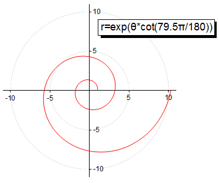
必要なOriginのバージョン: Origin 2015 SR0以降
学習する項目
このチュートリアルでは、以下の項目について説明します。
- 極座標グラフを作成する
- 方位軸を非表示にする
- 放射軸を編集する
ステップ
このチュートリアルは、チュートリアルデータプロジェクト（<Origin EXE フォルダ>\Samples\TutorialData.opj）と関連しています。
方位軸なしの極座標グラフを作図する
- TutorialData.opj を開き、プロジェクトエクスプローラでCustom Radial Axis
folderフォルダを開き、Book１Eを開きます。
- 列Bを選択して、作図：特殊グラフ：θr極座標グラフ：を選択して極座標グラフを作成します。
- 凡例を選択して削除します。
- 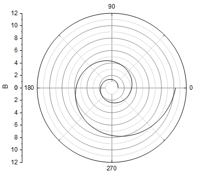
- 外軸（グラフ外側の円形の軸）を非表示にするには、軸上でダブルクリックして、軸ダイアログを開きます。表示
タブに移動し、左のパネルで角度 - 外部 を選択し、表示のチェックを外します。
- 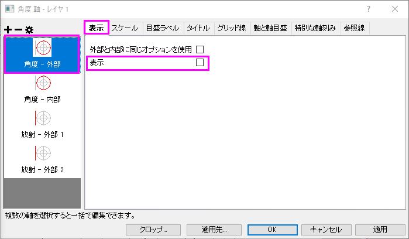
- 全ての角度グリッドを隠すには、グリッド タブに移動し、左のパネルで角度 が選ばれていることを確認します。グリッド線のセクションで、主グリッド線と副グリッド線の表示のチェックをはずします。
- 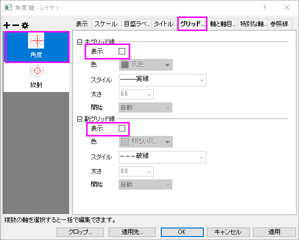
- スケールタブに移動し、左パネルで「放射」を選択します。軸スケールを以下のように設定します。
- 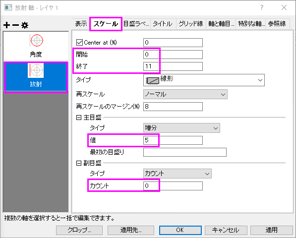
- グリッド線ページを開き、以下のように設定します。
- 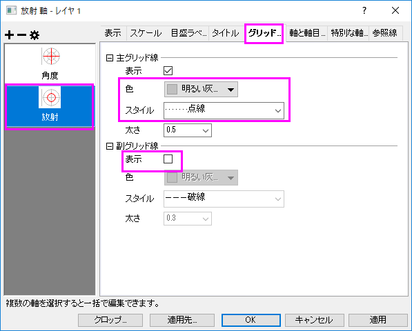
各主目盛上に放射軸を追加する
- 方位軸の主目盛位置に放射軸を表示するために、放射軸ノードのダイアログを開きます。このダイアログで、極座標図内の軸セクションの主目盛オプションをチェックします。
- 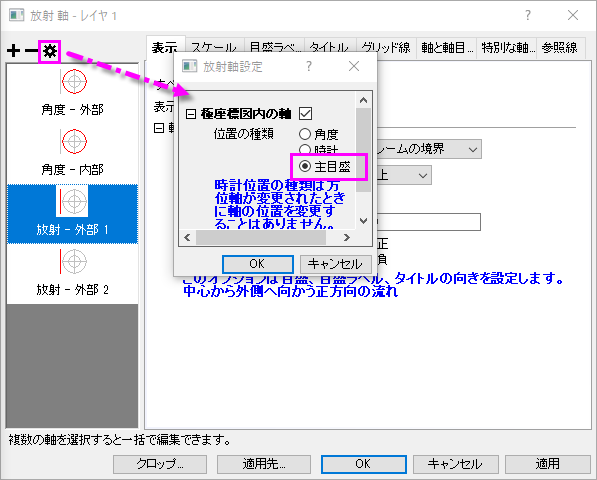
- 軸タイトルを隠すには、タイトルタブを開き、放射 - 主軸を左のパネルで選択します。表示チェックボックスのチェックを外します。適用ボタンをクリックします。
- 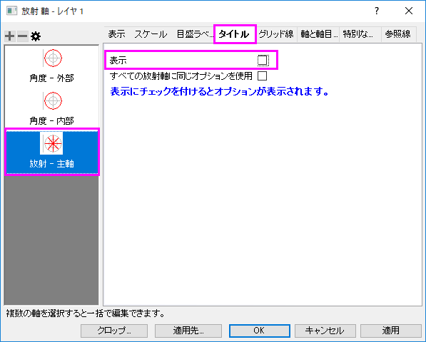
- グラフ中央に4つの0が表示されています。これを非表示にするために、特別な軸刻みノードを開きます。軸の開始ドロップダウンリストから隠すを選択します。
- 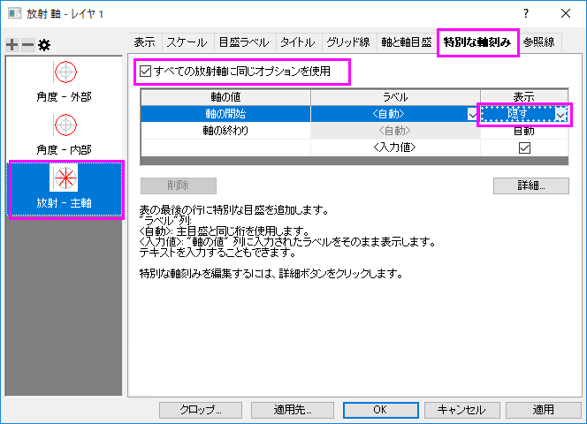
OKをクリックして、ダイアログを閉じます。
- 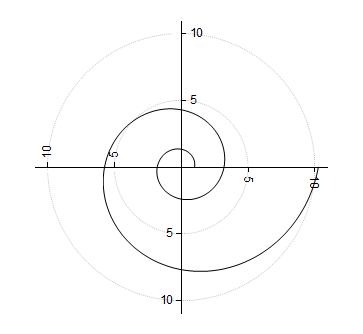
各主目盛で放射軸が表示されるように設定されている場合、放射軸のスケールタブを開き、主目盛を変更すると、放射軸は新たな刻みに対応した位置に配置されます。
新しい軸設定ダイアログで放射軸を編集
Originは2種類の放射軸をサポートしています。ひとつは、極座標グラフを囲むようなフレーム型で、もうひとつは、極座標グラフの中心から外側に向かって伸びる内部の軸です。
- 以前のセクションからグラフ操作を続けます。左のパネルの放射軸の設定ボタンをクリックします。放射軸設定のダイアログで、色座標図内の軸ブランチの下の角度リストを下図のように設定し、OKをクリックしてダイアログを閉じます。
- 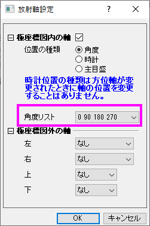
- 適用ボタンをクリックします。左のパネルに、4の内側放射軸が表示されます。
- タイトルタブに移動し、左パネルで「放射―内部軸１」を選択します。すべての放射軸に同じオプションを使用チェックボックスをチェックして、表示チェックボックスのチェックを外して全てのタイトルを非表示にします。これで、この設定が4つの放射軸に適用されます。
- 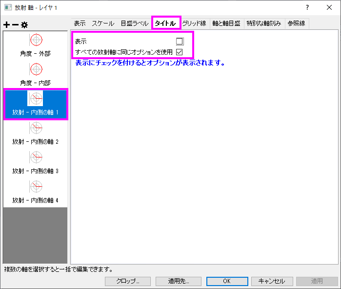
- 目盛ラベルタブを開き、すべての放射軸に同じオプションを使用にチェックを入れます。フォーマットタブで、回転(度)を0にします。
- 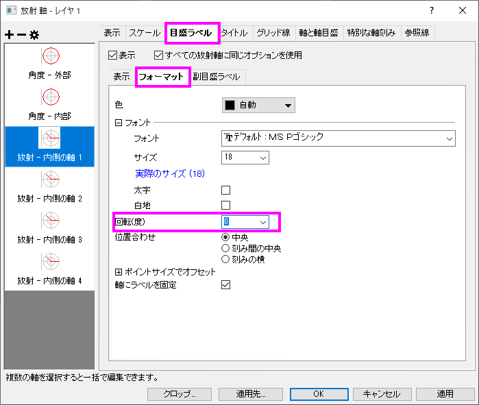
- 特別な軸刻みタブを開き、すべての放射軸に同じオプションを使用をチェックします。軸の開始を隠すにします。
- 表示タブを開き、Shiftキーを押して放射 - 内部3と放射 - 内部4を選択し、軸位置セクションの流れの方向を負に変更します。
- 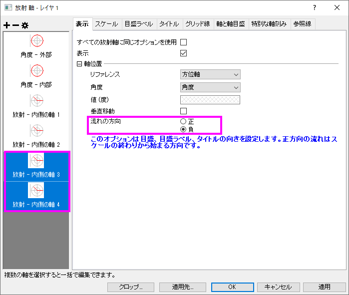
- 目盛ラベルノードを開き、表示サブタブにあるラベル接頭語として、マイナス（-）記号を入力します。
- 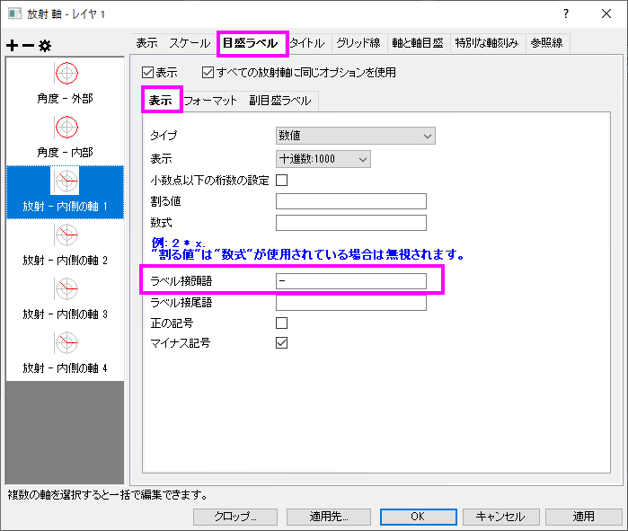
- OK ボタンをクリックします。
- 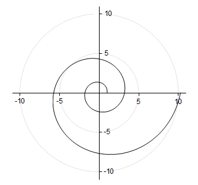
詳細な編集
- グラフの線の色を赤にし、太さを変更するために、線を選択し、スタイルツールバーを使用して、線/境界色を赤にし、線/境界の太さを1.5に設定します。
- 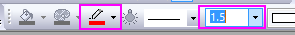
- グラフ上にタイトルとしてこのグラフの式を追加します。グラフ上で右クリックして、レイヤタイトルの追加/編集を選択します。そして、数式
r=exp(q*cot(79.5p/180)) をコピーしてタイトルとします。
- Originはリッチテキストをサポートしているので、テキスト内の q をハイライトし、スタイルツールバーの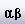ボタンをクリックして
 にします。同様に
p もに変更します。テキストは次のようになります。
にします。同様に
p もに変更します。テキストは次のようになります。
- 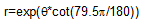
- タイトルオブジェクト上で右クリックし、オブジェクトの表示属性を選択して、オブジェクトプロパティダイアログを開きます。テキストタブで、フォントのサイズを26にし、枠タブの枠
を 影に設定します。 OK をクリックして設定を保存します。
- 式をドラッグして適当な場所に移動します。グラフはサマリーにある画像のようになります。